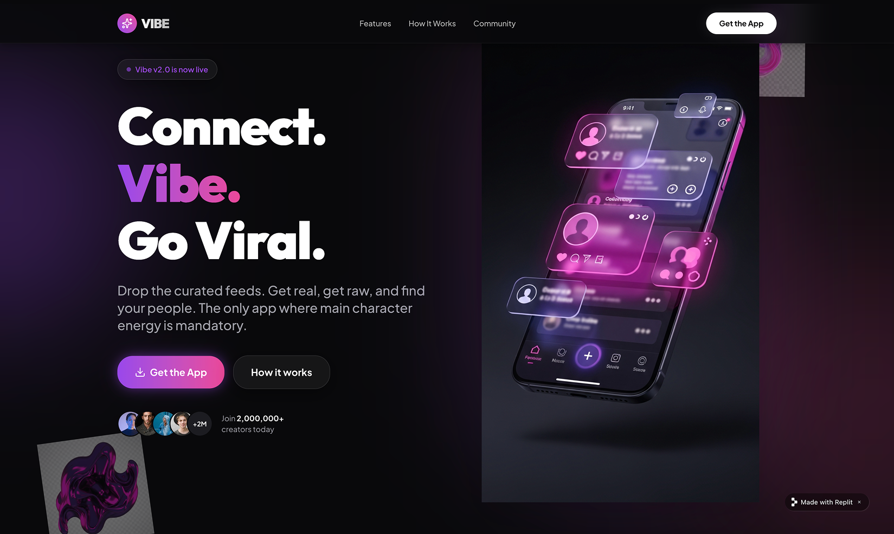
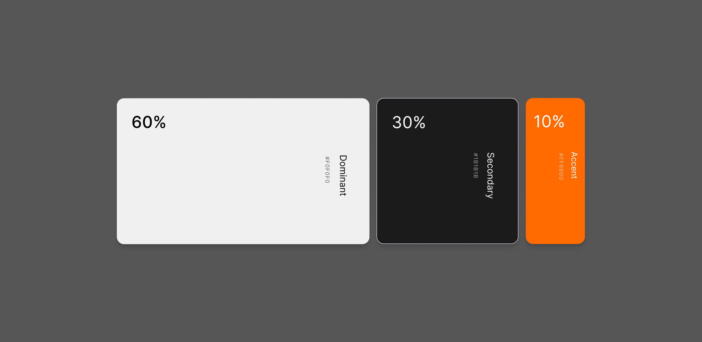
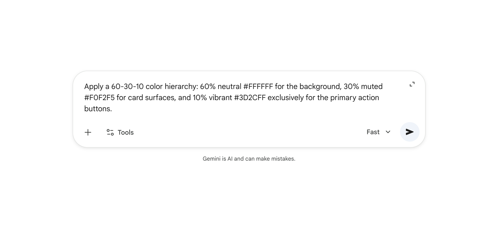
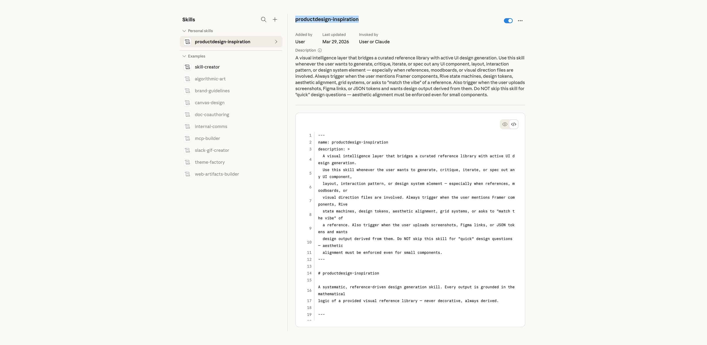
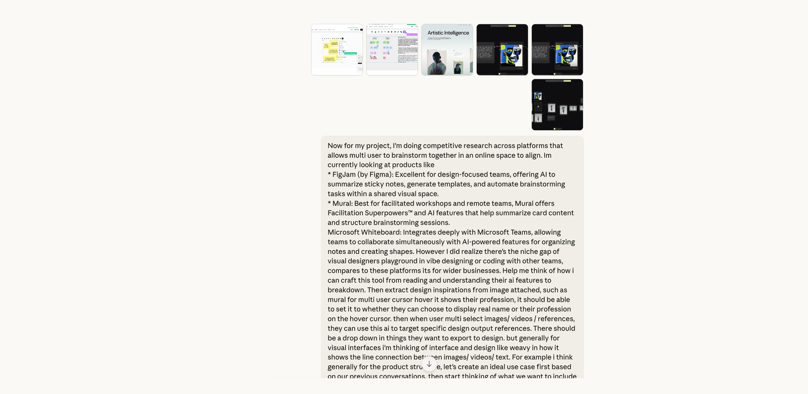
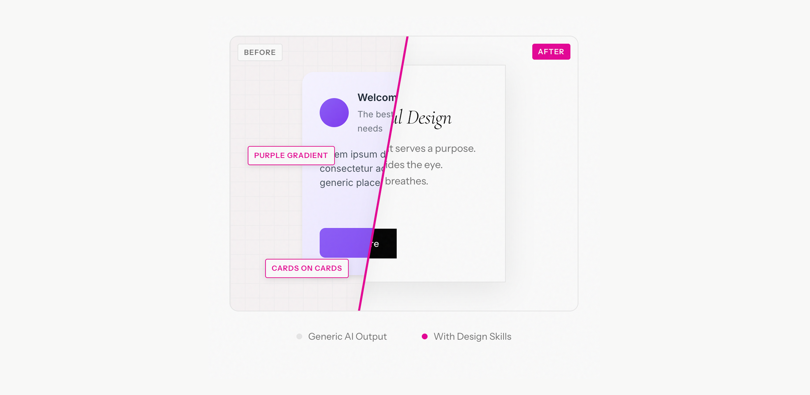

We've all seen it.
You prompt an AI to "create a clean, modern UI," and it spits out a layout that feels familiar. A bit too familiar. Usually, it's a specific shade of indigo, featuring perfectly rounded cards and a sterile aesthetic.
The core problem is that by default, vibe coding design is "too perfect."

Why do so many AI-generated products look identical?
Blame the Tailwind indigo-500.
During the initial training phases, models were fed a disproportionate amount of documentation from Tailwind CSS. The AI learned that "modern" equals Tailwind defaults. Consequently, it's not "designing" — it's mathematically optimizing based on the most common patterns: perfect grid alignment and linear animations.
01 Decoding what makes up the AI Vibe
| Dimension | The AI Problem | The Professional Fix |
|---|---|---|
| Layout | Rigid grid alignment, suffocatingly tight. | Explore dynamic layout and composition styles. |
| Motion | Fast, linear, robotic "on/off" movement. | Spring physics and natural weight. |
| Color | Saturated gradients, visual fatigue. | Try apply strict 60-30-10 color rule or generate design systems. |
Motion: Add "Physical Weight" to Design
Linear animation is the quickest giveaway of an unpolished interface. Employ Easing and Spring Physics to make UI elements behave like real-world physical objects. Never use linear — at a minimum, apply cubic-bezier curves for entry and exit.
Color: The 60-30-10 Rule
Borrowed from interior design and adapted for top-tier UX, the 60–30–10 Rule is a timeless formula for creating balanced, catchy interfaces. It forces a professional distribution of visual weight, ensuring your accent colors actually pop instead of getting lost in a sea of gradients.


02 Upgrade Your AI with a "Visual Intelligence" Skill
The biggest mistake in VibeCoding is giving the AI vague, descriptive adjectives like "make it look modern" or "fresh." The AI doesn't have a "taste" filter; it only has a "statistical average." To get professional results, you need to move beyond prompting and start configuring.
Instead of repeating your design preferences in every chat, you can implement a permanent Visual Intelligence Layer. This acts as a bridge between your curated reference library and the active code generation.
Tip: Use this skill I created whenever generating UI components, layouts, or "matching the vibe" of a reference. Do NOT skip for "quick" questions—aesthetic alignment must be enforced even for small components.

Download this skill- 1 Define Trigger Conditions: Explicitly tell the system to activate this layer when you mention Framer components, Rive state machines, or upload links/screenshots.
- 2 Enforce Mathematical Logic: Instead of "airy," the system will now calculate: "Implement a scattered layout with 64px of negative space and a 10-30% asymmetrical offset."
-
3
Audit Every Output: Never accept a default. If the AI proposes a
lineartransition, the audit protocol forces a replacement with a naturalcubic-bezieror Spring physics (Stiffness 520, Damping 32).
03 Source Visual Truth Over Textual Guesses
Start with Dedicated Visual Mood Boards.
Text prompts like "minimalist" are subjective and prone to failure. Instead, capture a screenshot of UI components or screenshotsyou admire.

- 1 Feed in Competitive Research: Look for similar products in features and screenshot them
- 2 Generate visual moodboard: Describe your imagination of product looks to tools like Gemini to use its model generate a visual moodboard.
04 Bypass Limits with Specialized Tools
Generalist AIs often struggle with high-end visual fidelity, like grain textures, complex gradient meshes, or glassmorphism. For these "high-value" details, bypass the chat interface and use purpose-built generators like impeccable.style or fffuel.co.
By plugging these specialized snippets into your project, you immediately boost its perceived value, moving it from a "standard AI template" to a bespoke, polished interface.

LLMs struggle to output complex SVG filters or multi-layered noise without breaking. They "hallucinate" CSS properties that don't exist.
Use external GUI tools to export raw code. Paste the result into your VibeCoding session to give your UI an instant "expensive" feel.